这一课给你 15 个职业 —— 老师、探险家、法官、狙击手、矿工……要你说做这一行需要什么条件。它看起来像列清单，但课本例题示范的是另一件事：先说两三个基本要求，然后用 But the most important qualification is…挑出最关键的那一条，并说明为什么。会排序，才是有观点；只会罗列，就是背单词。这一课还会大量用到 must / need to / have to be，用对它们是本课唯一的语法关口。
先说技能 — 这行需要会什么A teacher obviously needs to know the subject well and be able to explain it clearly.
再说品质 — 这行需要是什么样的人They also have to be patient, because students learn at different speeds.
最后挑一条 — 最关键的是什么，为什么But the most important qualification is caring whether the students actually learn — without that, the knowledge just sits there.
第三步一定要给「为什么」。
只说 The most important thing is patience. 是一句口号。加上 …because… 或者说明「没有它会怎样」，才是一个观点。
课本例题的最后一句就是这样：保密最重要，because financial damage affects society as much as the individual。
must 后面不加 to，need 后面要加 to。 ✗ A teacher must to be patient. / ✗ A teacher needs be patient. ✓ A teacher must be patient. / ✓ A teacher needs to be patient. 这两个错误在本课 15 个职业里会反复出现。
B · 资格分三类：别只说性格
类别
英语怎么说
例子
技能 / 知识 （可以学）
be good at / know how to / have training in
be good with numbers / know the law / have medical training
品质 / 性格 （很难学）
be + 形容词
patient / honest / calm under pressure / curious
身体 / 条件 （天生或靠练）
have + 名词 / be in good shape
have good eyesight / have stamina / be physically fit
最有意思的回答往往来自「意料之外的那一条」。
人人都会说狙击手需要「枪法好」，但更关键的是 patience —— 可能要一动不动等好几个小时。人人都会说探险家需要「勇敢」，但更关键的是 being careful。
先说显然的，再说出人意料的，这个顺序能让老师眼前一亮。
C · 排序和强调的句型
First of all, … Also, … But the most important thing is…
What you seeA slightly nervous-looking man in a waistcoat and red bow tie, juggling a cloud of numbers, coins, banknotes and maths symbols above his head.
The qualifications爱数字、准确、诚实，最重要的是保密。课本脚注：confidential = 机密的；leak = 泄露。
Say it like this"First of all, an accountant must love numbers and be accurate with them. He must be honest. If he is not, he could easily commit criminal acts by manipulating the figures at his disposal. But the most important qualification for an accountant is that he is able to keep information confidential and not leak any job-related financial knowledge to unauthorized people. Financial damage affects society as much as it does the individual."
这段里三个可以直接搬走的表达：
① be accurate with sth —— 对某事准确，比 careful 精确；
② at one's disposal —— 「可供某人支配的」，说明他为什么有机会犯错；
③ keep information confidential —— 「对信息保密」，这个搭配在谈任何职业道德时都能用。
课本用 he 指代所有会计，现在的英语通常不这样说。
这本书年代较早，默认职业人士是 he。现在更自然的说法是用复数或 they：
Accountants must be honest. / An accountant needs to be honest, because they handle other people's money.
用 they 指代单数的人，在现代英语里完全正确。
04十五个职业：需要什么条件
每张卡三段：What you see 照着图描述，The qualifications 用中文列出技能、品质和「最关键的一条」，Say it like this 给三档：① 一两个条件 / ② 技能 + 品质 / ③ 再挑出最重要的一条并给理由。
01
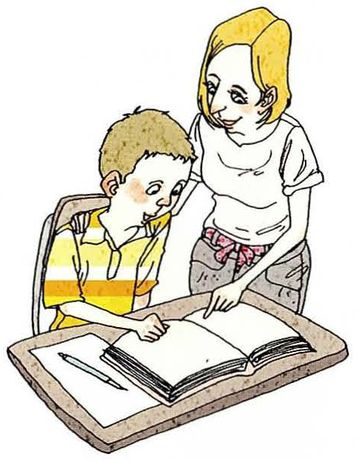
Teacher /ˈtiːtʃər/
What you seeA woman standing behind a boy at his desk, leaning over his shoulder and pointing at something in his open textbook. He's looking where she points.
The qualifications技能：懂学科、会讲解。品质：耐心。最关键：真正在乎学生学没学会。
Say it like this①A teacher needs to know the subject and be very patient. ②A teacher needs to know the subject well and be able to explain it in simple ways. They also have to be patient, because every student learns at a different speed. ③Knowing the subject is the obvious one, and explaining it clearly is harder than people think. But what really matters is caring whether the student actually learns. The best teacher I had wasn't the cleverest — she was the one who noticed when I'd stopped understanding and went back without making me feel stupid.
02
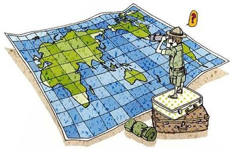
Explorer /ɪkˈsplɔːrər/
What you seeA tiny explorer in a safari hat standing on a stack of suitcases on top of a huge world map, peering through binoculars, with a question mark above his head. A sleeping bag lies rolled up nearby.
The qualifications技能：导航、野外生存。条件：体能好。最关键（出人意料的那条）：谨慎，而不是勇敢。
Say it like this①An explorer has to be brave and physically fit. ②An explorer needs survival skills — reading maps, finding water, dealing with injuries — and has to be in very good shape. They also need a lot of curiosity, or why go at all? ③People think an explorer mainly needs courage, but I'd say the opposite: they need to be very careful. The brave ones who take risks don't come back. The real skill is planning — knowing exactly what could go wrong and preparing for it — and then having the curiosity to go anyway.
03
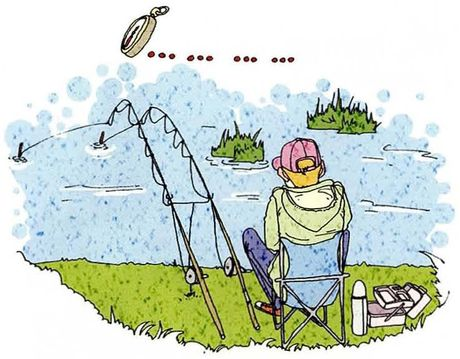
Fisher /ˈfɪʃər/
What you seeSomeone in a cap sitting in a folding chair by a lake, with four fishing rods propped up in front of them. A watch floats above their head next to a long row of dots — waiting, and waiting.
The qualifications技能：懂鱼、懂天气和水。最关键：耐心（图里的手表和省略号就在说这个）。
Say it like this①A fisher needs to be extremely patient. ②A fisher needs to know the water, the weather and the fish — where they are and when they feed. And they have to be patient, because you can sit for hours without a single bite. ③The picture says it all: the watch and the row of dots. Knowledge helps — reading the weather, choosing the place — but the most important qualification is being comfortable doing nothing for a long time. For a professional fisher on a boat, I'd add being physically tough, because it's one of the most dangerous jobs there is.
04
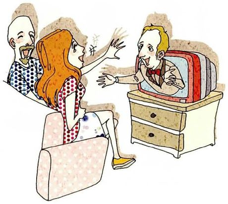
Comedian /kəˈmiːdiən/
What you seeA woman and a man on a sofa laughing so hard they're waving their arms, while a comedian in a bow tie grins out at them from an old television set.
The qualifications技能：节奏感（timing）、写段子。品质：自信、观察力。最关键：能承受冷场。
Say it like this①A comedian needs to be funny and confident on stage. ②A comedian needs good timing — when to pause, when to deliver the line. They also have to be very observant, because most good jokes come from noticing ordinary things nobody else mentions. ③Being funny is the obvious answer, but I think the real qualification is being able to survive silence. Every comedian has nights where the audience doesn't laugh, and you have to keep going and try again the next night. You can learn timing, but you can't really learn that kind of thick skin.
05
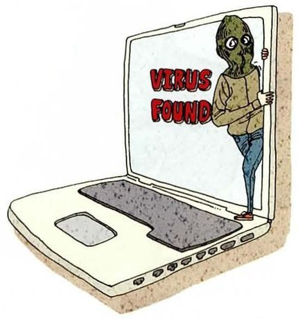
Hacker /ˈhækər/
What you seeA figure in a dark mask climbing out of a laptop screen, which flashes VIRUS FOUND in big red letters.
The qualifications课本脚注：hacker = 常用电脑、尤其偷偷使用或修改他人系统信息的人。这一题可以区分「犯罪黑客」和「安全研究员」。
Say it like this①A hacker has to be very good with computers and programming. ②A hacker needs deep technical knowledge — networks, code, how systems are built — and a lot of patience, because finding a weakness can take weeks. ③The technical skill is the same for both kinds of hacker: the criminal one in the picture and the "ethical hacker" companies pay to find their weaknesses. What separates them is the one qualification that has nothing to do with computers — honesty. So I'd say the most important qualification for a good hacker is the same as the accountant's: you're trusted with access, and you don't abuse it.
06
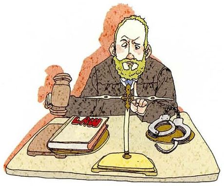
Judge /dʒʌdʒ/
What you seeA stern bearded judge in a dark robe sitting behind a desk with a gavel, a thick LAW book, a set of scales and a pair of handcuffs.
The qualifications技能：精通法律。品质：冷静、不偏不倚（impartial）。最关键：公正 —— 图里的天平就是这个意思。
Say it like this①A judge must know the law very well and be fair. ②A judge needs years of legal training and experience. They also have to stay calm and listen carefully to both sides before deciding anything. ③Legal knowledge is the entry requirement, but the most important qualification is being impartial — that's what the scales on the desk mean. A judge has to put aside their own feelings about the person in front of them, even when the case is upsetting. Without that, all the legal knowledge in the world just becomes a more sophisticated way of being unfair.
07
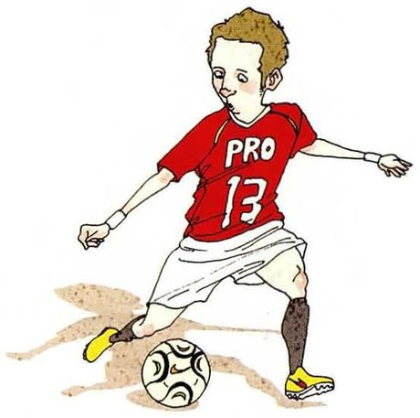
Professional athlete /prəˈfeʃənl ˈæθliːt/
What you seeA footballer in a red shirt with PRO 13 on it, mid-stride, about to kick a ball.
The qualifications条件：天赋、体能。品质：自律。最关键：能承受失败和伤病，长期坚持训练。
Say it like this①A professional athlete needs natural talent and a lot of training. ②A professional athlete has to be physically gifted and extremely disciplined — training every day, eating carefully, sleeping properly — for years. ③Talent gets you noticed, but discipline is what makes you professional. I'd say the most important qualification is handling failure: athletes lose constantly, get injured, get dropped from the team. The ones who last aren't always the most talented — they're the ones who come back to training the morning after a terrible game.
08
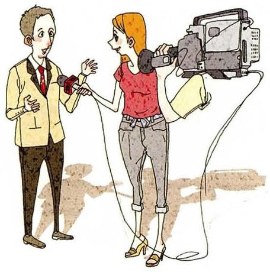
Journalist /ˈdʒɜːrnəlɪst/
What you seeA woman holding a microphone up to a man in a suit, interviewing him, while a camera operator films over her shoulder with a big TV camera.
The qualifications技能：会提问、会写作。品质：好奇。最关键：核实事实、对真相负责。
Say it like this①A journalist needs to be curious and good at asking questions. ②A journalist needs to write clearly, ask good questions and not be afraid of people in power. They also have to work fast, because news has deadlines. ③Curiosity and good questions are the basics — which, by the way, is exactly what Part III of this book was training. But the most important qualification is checking facts before you publish. A journalist who's fast but wrong does more harm than one who's slow, because a false story spreads much faster than the correction.
09
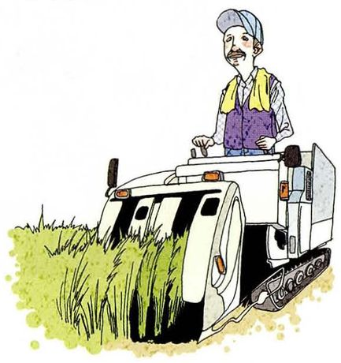
Farmer /ˈfɑːrmər/
What you seeA farmer in a cap and vest driving a combine harvester through a field of tall green crops.
The qualifications技能：懂作物、天气、机器。条件：能吃苦。最关键：能承受不确定性 —— 一年的收成取决于天气。
Say it like this①A farmer has to be hard-working and know a lot about crops. ②A farmer needs to understand soil, seasons and weather, and these days they also need to handle machines like the harvester in the picture. And they have to be prepared for very long days. ③Hard work is obvious, and modern farmers also need technical and business skills. But I'd say the key qualification is living with uncertainty. You can do everything right for a whole year and still lose the harvest to one storm. My grandparents farmed, and that's the thing they talked about most — not the work, the waiting.
10
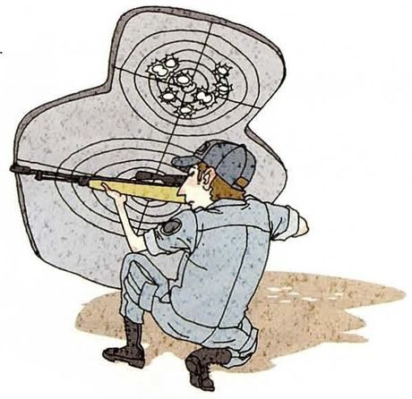
Sniper /ˈsnaɪpər/
What you seeA soldier in uniform kneeling and aiming a long rifle, in front of a huge paper target whose centre is full of bullet holes.
The qualifications课本脚注：sniper = 从隐蔽处向人射击的人。人人都说「枪法准」，出人意料的那条是：极度耐心和冷静。
Say it like this①A sniper must be a very accurate shooter. ②A sniper needs excellent eyesight and years of shooting practice. They also have to stay completely still and calm for a very long time. ③Accuracy is the obvious qualification, and the target in the picture shows it. But from what I've read, the harder part is patience — lying still for hours, sometimes days, waiting for one moment. And there's a psychological side people rarely mention: being able to live with what the job requires afterwards. That's not something you can train on a target.
11
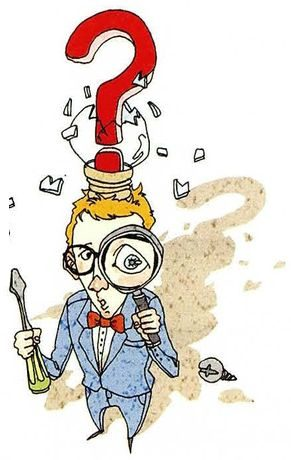
Inventor /ɪnˈventər/
What you seeA young man in a bow tie peering through a magnifying glass, holding a screwdriver, with a giant red question mark bursting out of the top of his head.
The qualifications品质：好奇（那个问号）。技能：动手能力（螺丝刀）。最关键：不怕失败、反复尝试。
Say it like this①An inventor needs to be curious and creative. ②An inventor needs curiosity — the question mark coming out of his head — and practical skills to actually build things, like the screwdriver in his hand. ③Curiosity and practical skill both matter, but the most important qualification is tolerating failure. Almost every invention fails dozens of times before it works. Someone who's curious but gives up after the third failure never invents anything. I see this in the lab: the people who succeed aren't the cleverest, they're the ones who are fine with being wrong for a long time.
12
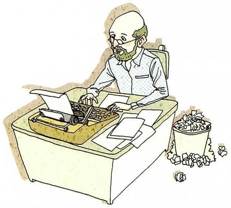
Novelist /ˈnɑːvəlɪst/
What you seeAn older man with glasses and a beard typing at an old typewriter, papers on his desk, and next to him a wastepaper bin overflowing with crumpled drafts.
The qualifications技能：语言、讲故事。品质：想象力、观察力。最关键：坚持 —— 那个满出来的废纸篓。
Say it like this①A novelist needs imagination and good writing skills. ②A novelist needs a strong imagination, a good ear for language, and the ability to observe people closely, because characters have to feel real. ③The detail I like in the picture is the bin full of crumpled paper. Imagination and good sentences matter, but the real qualification is persistence — being willing to write, throw it away, and write again, alone, for years, with no guarantee anyone will read it. Lots of people have a novel in their head; very few have the patience to finish one.
13
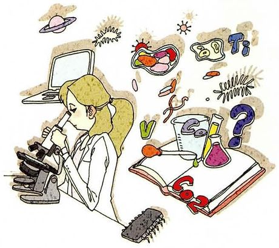
Scientist /ˈsaɪəntɪst/
What you seeA woman in a lab coat looking through a microscope, surrounded by flasks, a computer, a chip, a planet, chemical formulas and a big question mark.
The qualifications技能：专业训练、做实验。品质：好奇、细心。最关键：诚实对待数据。这一题你最有发言权。
Say it like this①A scientist needs to be curious and very careful. ②A scientist needs years of training, a lot of curiosity and the patience to repeat experiments again and again. They also have to be precise, because tiny errors can change a result. ③I'm a PhD student, so I'll speak from experience. Curiosity and training are the entry ticket. But the most important qualification is honesty with your own data — accepting a result that proves you wrong instead of quietly adjusting it. It sounds obvious, but when you've spent a year on an idea, it's very tempting to see what you want to see.
14
Businessperson /ˈbɪznəspɜːrsn/
What you seeA man in a suit and flying goggles steering a ship's wheel that's bursting out of a laptop, with banknotes flying around him and two big red arrows shooting upwards.
The qualifications技能：懂财务、懂市场。品质：敢冒险、会判断。最关键：在信息不全时做决定（那个舵）。
Say it like this①A businessperson needs to be good with money and willing to take risks. ②A businessperson needs to understand money and markets, and be good with people — customers, staff, investors. They also have to be comfortable with risk. ③The ship's wheel in the picture is the right image: the key qualification is making decisions without knowing everything. You never have all the information, and waiting until you do means someone else gets there first. I'd add one thing people forget: being able to admit a decision was wrong and change course quickly.
15
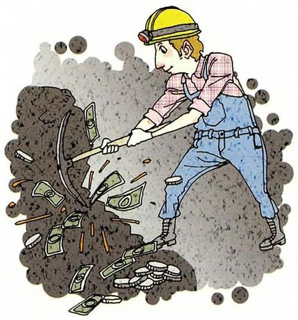
Miner /ˈmaɪnər/
What you seeA miner in a yellow helmet with a lamp, swinging a pickaxe into dark rock — and banknotes and coins are spilling out of it.
The qualifications条件：体力、耐力。品质：冷静、守纪律。最关键：严格遵守安全规程，团队互相照应。
Say it like this①A miner has to be physically strong. ②A miner needs strength and stamina for long shifts underground, and they have to be comfortable in dark, tight spaces. ③Strength is the obvious one, but the most important qualification is discipline about safety. Mining is one of the most dangerous jobs in the world, and accidents usually happen when someone takes a shortcut. Underground, you're responsible for the people around you, not just yourself. The picture shows money coming out of the rock — but the real cost is the risk, which is why I think miners deserve that money.
On paper, a degree and research experience. In practice, I'd say three things: patience, because most experiments fail; honesty with the data, even when it disappoints you; and being able to explain your work to people outside the field. The third one is the one I'm worst at, which is partly why I'm taking these classes.
区分「纸面要求」和「实际需要」，然后用课本的排序结构，最后一句自然地把话题连回上课本身。
Which of these fifteen jobs would you be worst at?
Comedian, definitely. I can be funny with friends, but standing on a stage with a room full of strangers waiting for me to make them laugh — I'd freeze. And I don't think I have the thick skin to fail in public night after night.
选一个、给理由，并且用上本课的词（thick skin）。自嘲式的回答在这类题里最自然。
Are qualifications on paper more important than personality?
For getting the job, the paper matters more. For keeping it and being good at it, personality matters more. A certificate proves you learned something once; it doesn't prove you'll be honest or patient on a bad day. So I'd say paper qualifications are a filter, and personality is what you're actually hiring.
不选边，而是区分两个阶段（得到工作 vs 做好工作）。最后一句 a filter vs what you're actually hiring 是很好的收尾。
Can you learn to be patient, or are you born with it?
Partly both. I don't think I was born patient, but research has made me more patient, simply because there was no other option. I'd say you can't decide to be patient, but you can be forced into it by a job — and then it slowly becomes part of you.
先给「两者都有」的判断，再用个人经历说明「被工作逼出来的耐心」。有观点、有证据。
Which job here do you think is the most underrated?
Farmer. People imagine it's simple physical work, but a modern farmer has to understand biology, weather, machines, prices and loans. And the whole country depends on them three times a day. Nobody admires farmers the way they admire scientists, but I'd argue the qualifications are just as demanding.
underrated（被低估的）是这类问题的关键词。用「人们以为…，但其实…」的对比结构，正好是第 02 节 C 表的句型。
Is there any job you think shouldn't exist?
That's a hard one. I'd say criminal hacking shouldn't exist as a job — but ethical hacking definitely should, and it uses exactly the same skills. So maybe the problem is never the job itself, it's who's paying for it and why.
先承认难，再用第 5 题的区分（犯罪黑客 vs 白帽黑客）给出一个有层次的答案，而不是简单说 yes 或 no。
07这节课最容易犯的错
这一课的错误集中在情态动词和形容词：must / need 的搭配、名词形容词混用。
✗A teacher must to be patient. ✓A teacher must be patient. / A teacher needs to be patient.
must 后面直接接动词原形，不加 to。本课最高频的错误。
✗A judge needs be fair. ✓A judge needs to be fair.
need 作实义动词时后面要加 to，正好和 must 相反。
✗A scientist needs patient. ✓A scientist needs patience. / A scientist needs to be patient.
need 后面接名词用 patience；接形容词要用 need to be patient。
✗The most important qualification is honest. ✓The most important qualification is honesty. / …is being honest.
qualification 是名词，等号另一边也要是名词或动名词，不能直接接形容词。
✗He must keep the information secretly. ✓He must keep the information confidential / secret.
keep + 宾语 + 形容词（keep it secret），不用副词 secretly。
✗A comedian should have a thick face. ✓A comedian needs a thick skin. / …has to be thick-skinned.
中文「脸皮厚」英语是 thick skin，而且是褒义：不怕批评。
✗A miner's job is very danger. ✓Mining is a very dangerous job.
danger 是名词，形容词是 dangerous。
✗An accountant must be honest, he cannot cheat. ✓An accountant must be honest, because they handle other people's money.
两个句子不能只用逗号连接；而且「不能作弊」只是换个说法重复，换成真正的理由更有说服力。
08五十分钟怎么用
15 个职业不必逐个背。练熟「技能 → 品质 → 最关键的一条」这个结构，任何职业都能临场组织。
课前 10 分钟：只看第 02 节 A 表need to / have to be / must / it helps if —— 每种造一句。重点把 must 和 need to 的搭配练对。